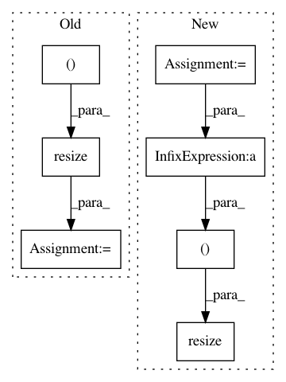

ed8539bc74d05675df666397be4902fa9cfb92a1,doc/examples/transform/plot_rescale.py,,,#,27
Before Change
image = data.camera()
image_rescaled = rescale(image, 0.5)
image_resized = resize(image, (400, 400), mode="reflect")
image_downscaled = downscale_local_mean(image, (2, 2))
fig, axes = plt.subplots(nrows=2, ncols=2, sharex=True, sharey=True)
After Change
image = color.rgb2gray(data.astronaut())
image_rescaled = rescale(image, 1.0 / 4.0, anti_aliasing=False)
image_resized = resize(image, (image.shape[0] / 4, image.shape[1] / 4),
anti_aliasing=True)
image_downscaled = downscale_local_mean(image, (4, 3))
fig, axes = plt.subplots(nrows=2, ncols=2)
In pattern: SUPERPATTERN
Frequency: 3
Non-data size: 7
Instances
Project Name: scikit-image/scikit-image
Commit Name: ed8539bc74d05675df666397be4902fa9cfb92a1
Time: 2017-09-20
Author: jsch@demuc.de
File Name: doc/examples/transform/plot_rescale.py
Class Name:
Method Name:
Project Name: baldassarreFe/deep-koalarization
Commit Name: 4af0d6b993453f2c8aec62c4ff7a8c0b1c877f22
Time: 2017-10-15
Author: baldassarre.fe@gmail.com
File Name: dataset/resize.py
Class Name: ImagenetResizer
Method Name: resize_img
Project Name: baldassarreFe/deep-koalarization
Commit Name: 3a25edce742db97d936ffb645185b520878d0c6d
Time: 2017-05-06
Author: baldassarre.fe@gmail.com
File Name: dataset/resize.py
Class Name: ImagenetResizer
Method Name: resize_img